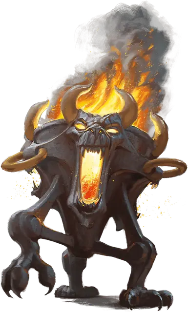

Оживление вещей
Animate Objects
5 уровень, Преобразование

Время сотворения 1 действие
Дистанция 120 футов
Компоненты В, С
Длительность Концентрация, вплоть до 1 минуты
Классы Бард, Волшебник, Изобретатель, Чародей
Подклассы домен кузни (жрец)
По вашему приказу оживают предметы. Выберите до десяти немагических предметов в пределах дистанции, которые никто не несёт и не носит. Цели Среднего размера считаются за два предмета, Большие цели считаются за четыре предмета, Огромные цели считаются за восемь предметов. Оживлять предметы с размером больше Огромного нельзя. Все цели оживают и становятся существами под вашим контролем до окончания действия заклинания или пока их хиты не уменьшатся до 0.
Вы можете бонусным действием мысленно отдать приказ существу, созданному этим заклинанием, если оно находятся в пределах 500 футов от вас (если вы контролируете несколько существ, вы можете отдавать один и тот же приказ любому количеству из них одновременно). Вы решаете, какое действие совершит это существо, и куда оно переместится в следующем ходу, или вы можете отдать общий приказ, например, охранять комнату или коридор. Если вы не отдадите команду, существо будет всего лишь защищаться от врагов. Получив приказ, существо продолжает его выполнять, пока задача не будет выполнена.
| Размер | Хиты | КД | Атака | Сила | Ловкость |
| Крошечный | 20 | 18 | +8 к атаке, урон 1к4 + 4 | 4 | 18 |
| Маленький | 25 | 16 | +6 к атаке, урон 1к8 + 2 | 6 | 14 |
| Средний | 40 | 13 | +5 к атаке, урон 2к6 + 1 | 10 | 12 |
| Большой | 50 | 10 | +6 к атаке, урон 2к10 + 2 | 14 | 10 |
| Огромный | 80 | 10 | +8 к атаке, урон 2к12 + 4 | 18 | 6 |
Оживлённый предмет является Конструктом с КД, хитами, атаками, Силой и Ловкостью, зависящими от его размера. Его Телосложение 10, Интеллект и Мудрость 3, а Харизма 1. Его скорость 30 футов; если у предмета нет ног или других придатков, которые можно использовать для перемещения, то он получает скорость полёта 30 футов и может парить. Если предмет прикреплён к поверхности или большему предмету, например, это цепь, прикреплённая к стене, его скорость равна 0. Он обладает слепым зрением в радиусе 30 футов и ничего не воспринимает за этими пределами. Когда хиты оживлённого предмета опускаются до 0, он возвращает себе свой обычный облик, а излишний урон переносится на оригинальный облик.
Если вы приказываете предмету атаковать, он может совершить одну рукопашную атаку по существу в пределах 5 футов от него. Он совершает размашистую атаку с бонусом атаки и дробящим уроном, зависящим от его размера. Мастер может постановить, что этот предмет причиняет рубящий или колющий урон.
На больших уровнях. Если вы накладываете это заклинание, используя ячейку 6-го уровня или выше, вы можете оживить два дополнительных предмета за каждый уровень ячейки выше пятого.